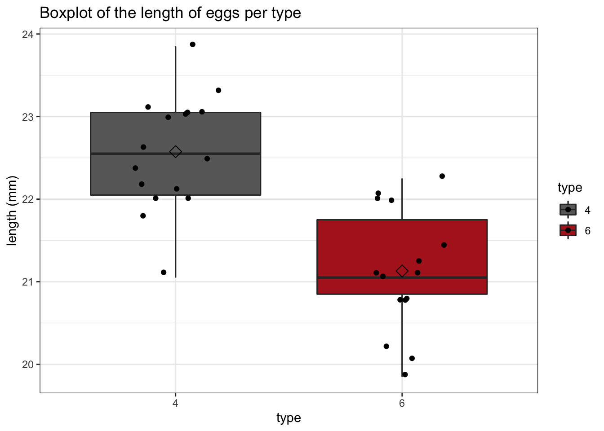
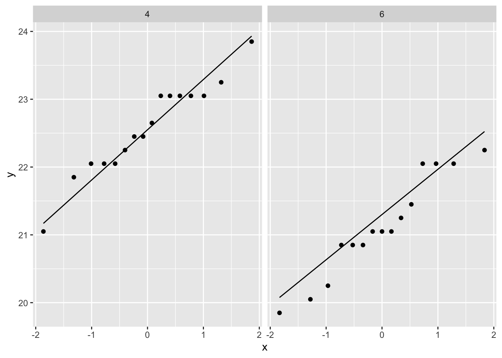

Aims of this exercise
In this tutorial you will further sharpen your skills in
- data wrangling
- formulating the null and alternative hypothesis of t-tests
- critically evaluating the assumptions of t-tests,
- in selecting the appropriate test for answering the research question, and
- in formulating your conclusion in terms of the research question.
Cuckoo dataset
The common cuckoo does not build its own nest: it prefers to lay its eggs in another birds’ nest. It is known, since 1892, that the type of cuckoo bird eggs are different between different locations. In a study from 1940, it was shown that cuckoos return to the same nesting area each year, and that they always pick the same bird species to be a “foster parent” for their eggs.
Over the years, this has lead to the development of geographically determined subspecies of cuckoos. These subspecies have evolved in such a way that their eggs look as similar as possible as those of their foster parents.
The cuckoo dataset contains information on 120 Cuckoo eggs, obtained from randomly selected “foster” nests. For these eggs, researchers have measured the length (in mm) and established the type (species) of foster parent. The type column is coded as follows:
type=1: Meadow pipittype=2: Tree pipittype=3: Dunnocktype=4: European robintype=5: White wagtailtype=6: Eurasian wren
Research question
The researchers want to test if the type of foster parent has an effect on the average length of the cuckoo eggs.
In practice, they want to study this for all six species. However, a t-test can only be used to study mean differences between two groups. If we want to analyze multiple groups, there are two options.
We perform t-tests on all pairwise combinations of types. This mean we need to perform n*(n-1)/2 = 15 t-tests.
We perform an ANOVA analysis.
The second strategy is much more efficient and has a higher statistical power. We will learn all about ANOVA in chapter 7.
In this tutorial, we will assess a single pairwise comparison, between the European robin and the European wren. In a following tutorial, we will come back to this dataset and make a full analysis with ANOVA.
Load the required libraries
Import data
Cuckoo <- read_tsv("https://raw.githubusercontent.com/statOmics/PSLS21/data/Cuckoo.txt")
head(Cuckoo)
Tidy data
For this exercise, we only care about the European robin and the Eurasian wren. Therefore, we can remove the observations of the other types. In addition, it seems that the type column rather than a factor. Let’s fix this:
Cuckoo <- Cuckoo %>%
filter(type %in% c("4", "6")) %>%
mutate(type = as.factor(type))
Data exploration
How many birds do we have for each type?
Visualize the data using a suitable strategy
Cuckoo %>%
ggplot(aes(x = type, y = length, fill = type)) +
geom_boxplot() +
theme_bw() +
geom_boxplot(outlier.shape = NA) +
geom_jitter(width = 0.2) +
scale_fill_manual(values = c("dimgrey", "firebrick")) +
ggtitle("Boxplot of the length of eggs per type") +
ylab("length (mm)") +
stat_summary(
fun = mean, geom = "point",
shape = 5, size = 3, color = "black",
)

We clearly see that, on average, the eggs laid in the nest of the European robin (type=4) are larger than those laid in the nest of the Eurasian wren. But is this difference significant?
Analysis
We can test this with an unpaired, two-sample t-test. But before we can start the analysis, we must check if all assumptions to perform a t-test are met.
Check the assumptions
The observations are independent of each other (in both groups)
The data (length) must be normally distributed (in both groups)
Additionally, we should check if the variability within both groups is similar or not (in the lattter case we should use a Welch t-test).
- The variability within both groups is similar
The first assumption is met, as we may assume that there are no specific patterns of correlation randomly selected nests.
To check the normality assumption, we will use QQ plots.
Cuckoo %>%
ggplot(aes(sample = length)) +
geom_qq() +
geom_qq_line() +
facet_grid(~type)

There seems to be no clear deviation from normality.
The third assumption seems to be met based on our visualization with boxplots. Indeed the interquartile range of the boxes are very comparable. As all assumptions are met, we may proceed with the analysis.
Hypothesis testing
output <- t.test(length ~ type, data = Cuckoo, var.equal = TRUE)
output
##
## Two Sample t-test
##
## data: length by type
## t = 5.633, df = 29, p-value = 4.378e-06
## alternative hypothesis: true difference in means between group 4 and group 6 is not equal to 0
## 95 percent confidence interval:
## 0.9203528 1.9696472
## sample estimates:
## mean in group 4 mean in group 6
## 22.575 21.130
Conclusion
There is an extremely significant difference in mean length of Cuckoo eggs fostered by the European robin and those fostered by the Eurasian wren (p << 0.001). The eggs fostered by the European wren are on average 1.45 mm longer (95% CI [0.92, 1.97]).
LS0tCnRpdGxlOiAiRXhlcmNpc2UgNS4zOiBIeXBvdGhlc2lzIHRlc3Rpbmcgb24gdGhlIGN1Y2tvbyBkYXRhc2V0IC0gc29sdXRpb24iCmF1dGhvcjogIkxpZXZlbiBDbGVtZW50LCBKZXJvZW4gR2lsaXMgYW5kIE1pbGFuIE1hbGZhaXQiCmRhdGU6ICJzdGF0T21pY3MsIEdoZW50IFVuaXZlcnNpdHkgKGh0dHBzOi8vc3RhdG9taWNzLmdpdGh1Yi5pbykiCi0tLQoKIyBBaW1zIG9mIHRoaXMgZXhlcmNpc2UKCkluIHRoaXMgdHV0b3JpYWwgeW91IHdpbGwgZnVydGhlciBzaGFycGVuIHlvdXIgc2tpbGxzIGluCgotIGRhdGEgd3JhbmdsaW5nIAotIGZvcm11bGF0aW5nIHRoZSBudWxsIGFuZCBhbHRlcm5hdGl2ZSBoeXBvdGhlc2lzIG9mIHQtdGVzdHMKLSBjcml0aWNhbGx5IGV2YWx1YXRpbmcgdGhlIGFzc3VtcHRpb25zIG9mIHQtdGVzdHMsIAotIGluIHNlbGVjdGluZyB0aGUgYXBwcm9wcmlhdGUgdGVzdCBmb3IgYW5zd2VyaW5nIHRoZSByZXNlYXJjaCBxdWVzdGlvbiwgYW5kCi0gaW4gZm9ybXVsYXRpbmcgeW91ciBjb25jbHVzaW9uIGluIHRlcm1zIG9mIHRoZSByZXNlYXJjaCBxdWVzdGlvbi4KCgojIEN1Y2tvbyBkYXRhc2V0CgpUaGUgY29tbW9uIGN1Y2tvbyBkb2VzIG5vdCBidWlsZCBpdHMgb3duIG5lc3Q6IGl0IHByZWZlcnMKdG8gbGF5IGl0cyBlZ2dzIGluIGFub3RoZXIgYmlyZHMnIG5lc3QuIEl0IGlzIGtub3duLCBzaW5jZSAxODkyLAp0aGF0IHRoZSB0eXBlIG9mIGN1Y2tvbyBiaXJkIGVnZ3MgYXJlIGRpZmZlcmVudCBiZXR3ZWVuIGRpZmZlcmVudApsb2NhdGlvbnMuIEluIGEgc3R1ZHkgZnJvbSAxOTQwLCBpdCB3YXMgc2hvd24gdGhhdCBjdWNrb29zIHJldHVybgp0byB0aGUgc2FtZSBuZXN0aW5nIGFyZWEgZWFjaCB5ZWFyLCBhbmQgdGhhdCB0aGV5IGFsd2F5cyBwaWNrCnRoZSBzYW1lIGJpcmQgc3BlY2llcyB0byBiZSBhICJmb3N0ZXIgcGFyZW50IiBmb3IgdGhlaXIgZWdncy4KCk92ZXIgdGhlIHllYXJzLCB0aGlzIGhhcyBsZWFkIHRvIHRoZSBkZXZlbG9wbWVudCBvZiBnZW9ncmFwaGljYWxseQpkZXRlcm1pbmVkIHN1YnNwZWNpZXMgb2YgY3Vja29vcy4gVGhlc2Ugc3Vic3BlY2llcyBoYXZlIGV2b2x2ZWQgaW4Kc3VjaCBhIHdheSB0aGF0IHRoZWlyIGVnZ3MgbG9vayBhcyBzaW1pbGFyIGFzIHBvc3NpYmxlIGFzIHRob3NlCm9mIHRoZWlyIGZvc3RlciBwYXJlbnRzLgoKVGhlIGN1Y2tvbyBkYXRhc2V0IGNvbnRhaW5zIGluZm9ybWF0aW9uIG9uIDEyMCBDdWNrb28gZWdncywKb2J0YWluZWQgZnJvbSByYW5kb21seSBzZWxlY3RlZCAiZm9zdGVyIiBuZXN0cy4KRm9yIHRoZXNlIGVnZ3MsIHJlc2VhcmNoZXJzIGhhdmUgbWVhc3VyZWQgdGhlIGBsZW5ndGhgIChpbiBtbSkKYW5kIGVzdGFibGlzaGVkIHRoZSBgdHlwZWAgKHNwZWNpZXMpIG9mIGZvc3RlciBwYXJlbnQuClRoZSB0eXBlIGNvbHVtbiBpcyBjb2RlZCBhcyBmb2xsb3dzOgoKLSBgdHlwZT0xYDogTWVhZG93IHBpcGl0Ci0gYHR5cGU9MmA6IFRyZWUgcGlwaXQKLSBgdHlwZT0zYDogRHVubm9jawotIGB0eXBlPTRgOiBFdXJvcGVhbiByb2JpbgotIGB0eXBlPTVgOiBXaGl0ZSB3YWd0YWlsCi0gYHR5cGU9NmA6IEV1cmFzaWFuIHdyZW4KCiMgUmVzZWFyY2ggcXVlc3Rpb24KClRoZSByZXNlYXJjaGVycyB3YW50IHRvIHRlc3QgaWYgdGhlIHR5cGUgb2YgZm9zdGVyIHBhcmVudApoYXMgYW4gZWZmZWN0IG9uIHRoZSBhdmVyYWdlIGxlbmd0aCBvZiB0aGUgY3Vja29vIGVnZ3MuCgpJbiBwcmFjdGljZSwgdGhleSB3YW50IHRvIHN0dWR5IHRoaXMgZm9yIGFsbCBzaXggc3BlY2llcy4KSG93ZXZlciwgYSB0LXRlc3QgY2FuIG9ubHkgYmUgdXNlZCB0byBzdHVkeSBtZWFuIGRpZmZlcmVuY2VzCmJldHdlZW4gdHdvIGdyb3Vwcy4gSWYgd2Ugd2FudCB0byBhbmFseXplIG11bHRpcGxlIGdyb3VwcywgdGhlcmUKYXJlIHR3byBvcHRpb25zLgoKMS4gV2UgcGVyZm9ybSB0LXRlc3RzIG9uIGFsbCBwYWlyd2lzZSBjb21iaW5hdGlvbnMgb2YgdHlwZXMuClRoaXMgbWVhbiB3ZSBuZWVkIHRvIHBlcmZvcm0gbioobi0xKS8yID0gMTUgdC10ZXN0cy4KCjIuIFdlIHBlcmZvcm0gYW4gQU5PVkEgYW5hbHlzaXMuCgpUaGUgc2Vjb25kIHN0cmF0ZWd5IGlzIG11Y2ggbW9yZSBlZmZpY2llbnQgYW5kIGhhcyBhIGhpZ2hlcgpzdGF0aXN0aWNhbCBwb3dlci4gV2Ugd2lsbCBsZWFybiBhbGwgYWJvdXQgQU5PVkEgaW4gY2hhcHRlciA3LgoKSW4gdGhpcyB0dXRvcmlhbCwgd2Ugd2lsbCBhc3Nlc3MgYSBzaW5nbGUgcGFpcndpc2UgY29tcGFyaXNvbiwKYmV0d2VlbiB0aGUgRXVyb3BlYW4gcm9iaW4gYW5kIHRoZSBFdXJvcGVhbiB3cmVuLiBJbiBhIGZvbGxvd2luZwp0dXRvcmlhbCwgd2Ugd2lsbCBjb21lIGJhY2sgdG8gdGhpcyBkYXRhc2V0IGFuZCBtYWtlIGEgZnVsbAphbmFseXNpcyB3aXRoIEFOT1ZBLgoKTG9hZCB0aGUgcmVxdWlyZWQgbGlicmFyaWVzCgpgYGB7ciwgbWVzc2FnZT1GQUxTRX0KbGlicmFyeSh0aWR5dmVyc2UpCmBgYAoKIyBJbXBvcnQgZGF0YQoKYGBge3IsIG1lc3NhZ2U9RkFMU0V9CkN1Y2tvbyA8LSByZWFkX3RzdigiaHR0cHM6Ly9yYXcuZ2l0aHVidXNlcmNvbnRlbnQuY29tL3N0YXRPbWljcy9QU0xTMjEvZGF0YS9DdWNrb28udHh0IikKaGVhZChDdWNrb28pCmBgYAoKIyBUaWR5IGRhdGEKCkZvciB0aGlzIGV4ZXJjaXNlLCB3ZSBvbmx5IGNhcmUgYWJvdXQgdGhlIEV1cm9wZWFuIHJvYmluCmFuZCB0aGUgRXVyYXNpYW4gd3Jlbi4gVGhlcmVmb3JlLCB3ZSBjYW4gcmVtb3ZlIHRoZSBvYnNlcnZhdGlvbnMKb2YgdGhlIG90aGVyIHR5cGVzLiBJbiBhZGRpdGlvbiwgaXQgc2VlbXMgdGhhdCB0aGUgYHR5cGVgCmNvbHVtbiByYXRoZXIgdGhhbiBhIGZhY3Rvci4gTGV0J3MgZml4IHRoaXM6CgpgYGB7cn0KQ3Vja29vIDwtIEN1Y2tvbyAlPiUKICBmaWx0ZXIodHlwZSAlaW4lIGMoIjQiLCAiNiIpKSAlPiUKICBtdXRhdGUodHlwZSA9IGFzLmZhY3Rvcih0eXBlKSkKYGBgCgojIERhdGEgZXhwbG9yYXRpb24KCkhvdyBtYW55IGJpcmRzIGRvIHdlIGhhdmUgZm9yIGVhY2ggdHlwZT8KCmBgYHtyfQpDdWNrb28gJT4lCiAgY291bnQodHlwZSkKYGBgCgpWaXN1YWxpemUgdGhlIGRhdGEgdXNpbmcgYSBzdWl0YWJsZSBzdHJhdGVneQoKYGBge3J9CkN1Y2tvbyAlPiUKICBnZ3Bsb3QoYWVzKHggPSB0eXBlLCB5ID0gbGVuZ3RoLCBmaWxsID0gdHlwZSkpICsKICBnZW9tX2JveHBsb3QoKSArCiAgdGhlbWVfYncoKSArCiAgZ2VvbV9ib3hwbG90KG91dGxpZXIuc2hhcGUgPSBOQSkgKwogIGdlb21faml0dGVyKHdpZHRoID0gMC4yKSArCiAgc2NhbGVfZmlsbF9tYW51YWwodmFsdWVzID0gYygiZGltZ3JleSIsICJmaXJlYnJpY2siKSkgKwogIGdndGl0bGUoIkJveHBsb3Qgb2YgdGhlIGxlbmd0aCBvZiBlZ2dzIHBlciB0eXBlIikgKwogIHlsYWIoImxlbmd0aCAobW0pIikgKwogIHN0YXRfc3VtbWFyeSgKICAgIGZ1biA9IG1lYW4sIGdlb20gPSAicG9pbnQiLAogICAgc2hhcGUgPSA1LCBzaXplID0gMywgY29sb3IgPSAiYmxhY2siLAogICkKYGBgCgpXZSBjbGVhcmx5IHNlZSB0aGF0LCBvbiBhdmVyYWdlLCB0aGUgZWdncyBsYWlkIGluIHRoZQpuZXN0IG9mIHRoZSBFdXJvcGVhbiByb2JpbiAodHlwZT00KSBhcmUgbGFyZ2VyIHRoYW4gdGhvc2UKbGFpZCBpbiB0aGUgbmVzdCBvZiB0aGUgRXVyYXNpYW4gd3Jlbi4gQnV0IGlzIHRoaXMgZGlmZmVyZW5jZSAqKnNpZ25pZmljYW50Kio/CgojIEFuYWx5c2lzCgpXZSBjYW4gdGVzdCB0aGlzIHdpdGggYW4gdW5wYWlyZWQsIHR3by1zYW1wbGUgdC10ZXN0LgpCdXQgYmVmb3JlIHdlIGNhbiBzdGFydCB0aGUgYW5hbHlzaXMsIHdlIG11c3QgY2hlY2sgaWYKYWxsIGFzc3VtcHRpb25zIHRvIHBlcmZvcm0gYSB0LXRlc3QgYXJlIG1ldC4KCiMjIENoZWNrIHRoZSBhc3N1bXB0aW9ucwoKMS4gVGhlIG9ic2VydmF0aW9ucyBhcmUgaW5kZXBlbmRlbnQgb2YgZWFjaCBvdGhlciAoaW4gYm90aCBncm91cHMpCgoyLiBUaGUgZGF0YSAobGVuZ3RoKSBtdXN0IGJlIG5vcm1hbGx5IGRpc3RyaWJ1dGVkIChpbiBib3RoIGdyb3VwcykKCkFkZGl0aW9uYWxseSwgd2Ugc2hvdWxkIGNoZWNrIGlmIHRoZSB2YXJpYWJpbGl0eSB3aXRoaW4gYm90aApncm91cHMgaXMgc2ltaWxhciBvciBub3QgKGluIHRoZSBsYXR0dGVyIGNhc2Ugd2Ugc2hvdWxkIHVzZQphIFdlbGNoIHQtdGVzdCkuCgozLiBUaGUgdmFyaWFiaWxpdHkgd2l0aGluIGJvdGggZ3JvdXBzIGlzIHNpbWlsYXIKClRoZSBmaXJzdCBhc3N1bXB0aW9uIGlzIG1ldCwgYXMgd2UgbWF5IGFzc3VtZSB0aGF0IHRoZXJlIGFyZSBubwpzcGVjaWZpYyBwYXR0ZXJucyBvZiBjb3JyZWxhdGlvbiByYW5kb21seSBzZWxlY3RlZCBuZXN0cy4KClRvIGNoZWNrIHRoZSBub3JtYWxpdHkgYXNzdW1wdGlvbiwgd2Ugd2lsbCB1c2UgUVEgcGxvdHMuCgpgYGB7cn0KQ3Vja29vICU+JQogIGdncGxvdChhZXMoc2FtcGxlID0gbGVuZ3RoKSkgKwogIGdlb21fcXEoKSArCiAgZ2VvbV9xcV9saW5lKCkgKwogIGZhY2V0X2dyaWQofnR5cGUpCmBgYAoKVGhlcmUgc2VlbXMgdG8gYmUgbm8gY2xlYXIgZGV2aWF0aW9uIGZyb20gbm9ybWFsaXR5LgoKVGhlIHRoaXJkIGFzc3VtcHRpb24gc2VlbXMgdG8gYmUgbWV0IGJhc2VkIG9uIG91cgp2aXN1YWxpemF0aW9uIHdpdGggYm94cGxvdHMuIEluZGVlZCB0aGUgaW50ZXJxdWFydGlsZSByYW5nZSBvZiB0aGUgYm94ZXMgYXJlIHZlcnkgY29tcGFyYWJsZS4gQXMgYWxsIGFzc3VtcHRpb25zIGFyZSBtZXQsIHdlIG1heSBwcm9jZWVkIHdpdGggdGhlIGFuYWx5c2lzLgoKIyMgSHlwb3RoZXNpcyB0ZXN0aW5nCgpgYGB7cn0Kb3V0cHV0IDwtIHQudGVzdChsZW5ndGggfiB0eXBlLCBkYXRhID0gQ3Vja29vLCB2YXIuZXF1YWwgPSBUUlVFKQpvdXRwdXQKYGBgCgojIyBDb25jbHVzaW9uCgpUaGVyZSBpcyBhbiBleHRyZW1lbHkgc2lnbmlmaWNhbnQgZGlmZmVyZW5jZSBpbiBtZWFuCmxlbmd0aCBvZiBDdWNrb28gZWdncyBmb3N0ZXJlZCBieSB0aGUgRXVyb3BlYW4gcm9iaW4gYW5kIHRob3NlIGZvc3RlcmVkIGJ5IHRoZSBFdXJhc2lhbiB3cmVuICAocCA8PCAwLjAwMSkuIFRoZSBlZ2dzCmZvc3RlcmVkIGJ5IHRoZSBFdXJvcGVhbiB3cmVuIGFyZSBvbiBhdmVyYWdlCmByIHJvdW5kKG91dHB1dCRlc3RpbWF0ZVsxXS1vdXRwdXQkZXN0aW1hdGVbMl0sMilgIG1tIGxvbmdlcgooOTUlIENJIFtgciByb3VuZChvdXRwdXQkY29uZi5pbnRbYygxLDIpXSwyKWBdKS4K